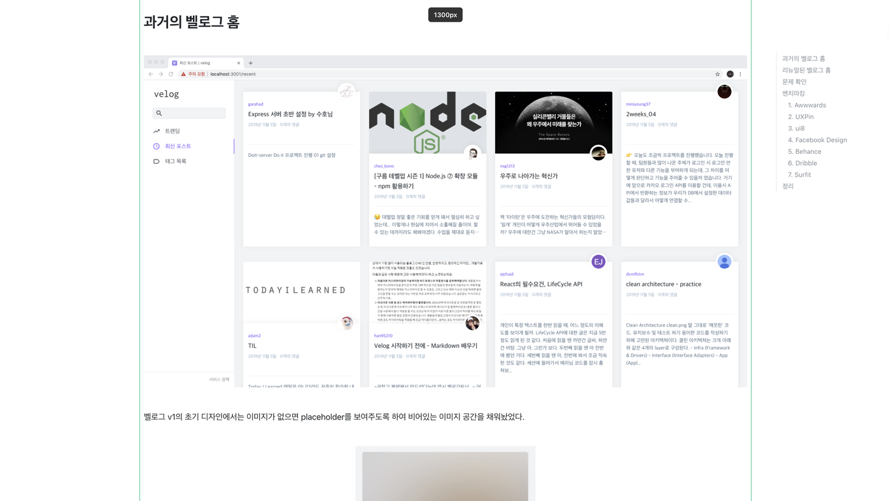
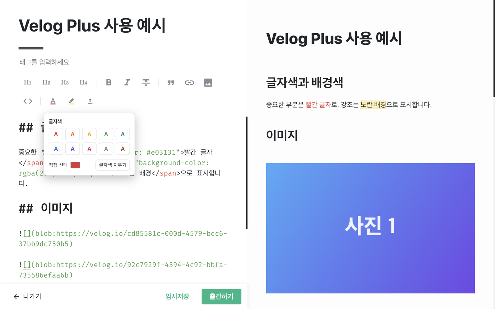
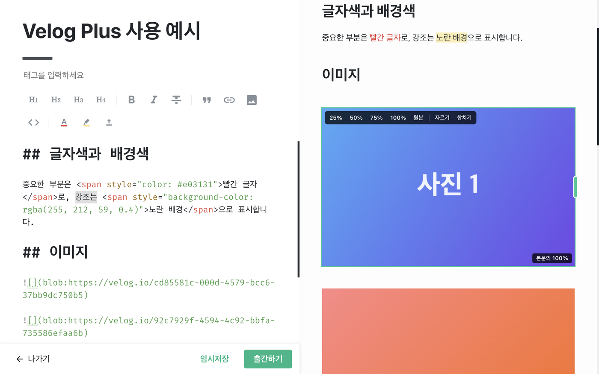
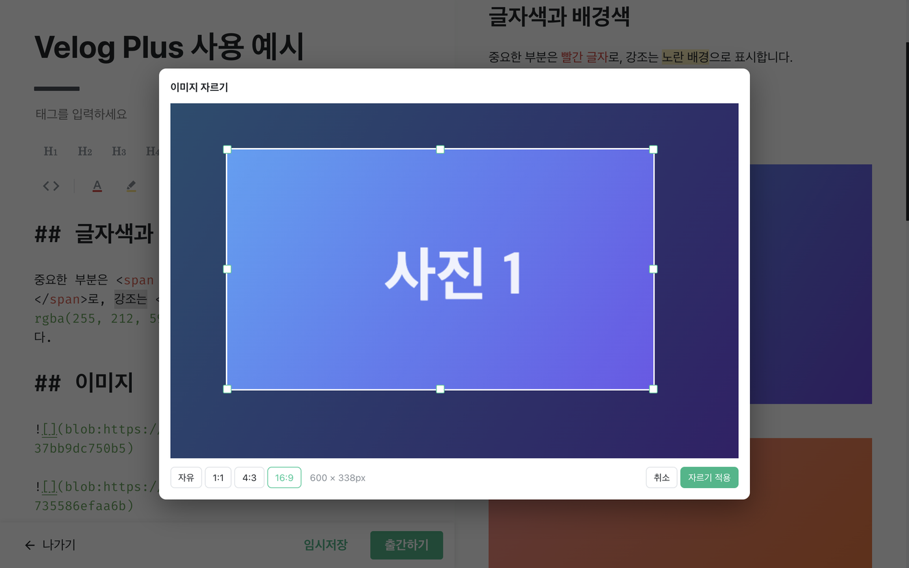
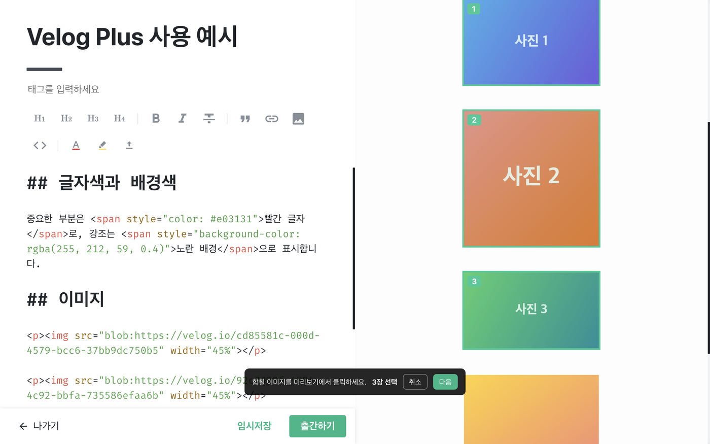
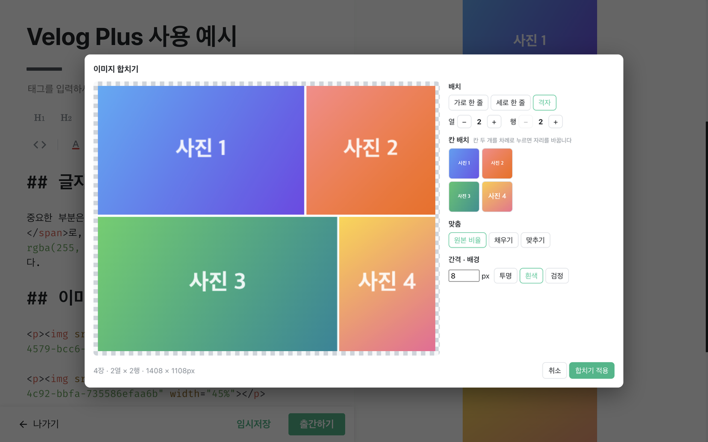
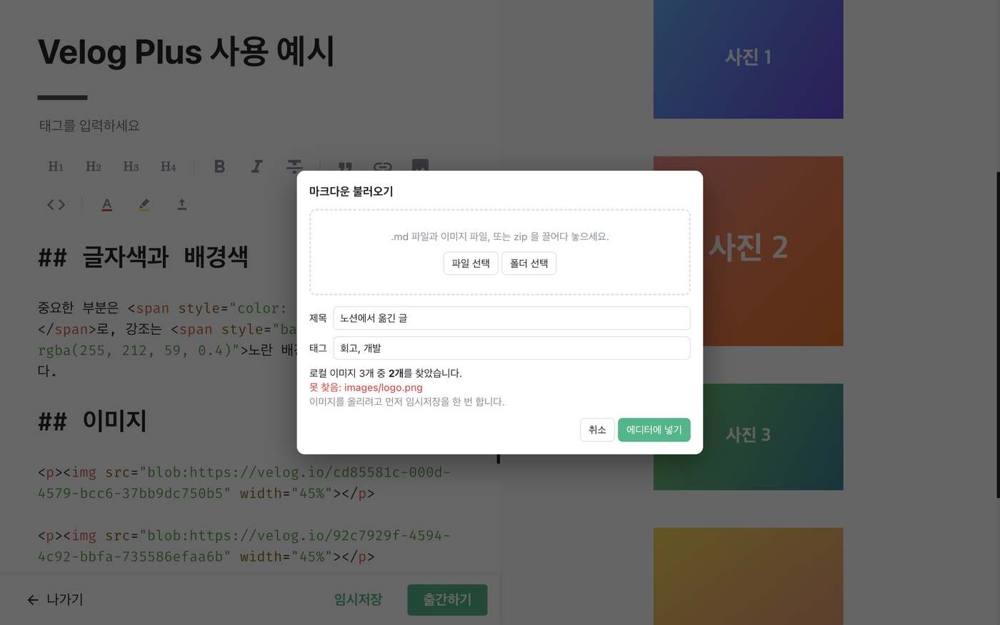

본문 폭 넓히기
velog 글 본문은 768px로 고정돼 있습니다. 원하는 폭으로 넓히거나 줄일 수 있습니다.
- 드래그: 글 페이지에서 본문 양옆 가장자리에 마우스를 올리면 초록 선이 나타납니다. 끌면 폭이 바뀌고, 화면 위에 현재 폭이 표시됩니다.
- 더블클릭: 초록 선을 더블클릭하면 원래 폭(768px)으로 돌아갑니다.
- 팝업: 툴바의 확장 아이콘을 누르면 켜기/끄기, 슬라이더, 숫자 입력, 프리셋(768·1024·1280·1600)으로 폭을 정할 수 있습니다. 숫자는 480~2400px 범위로 입력하면 Enter를 누르지 않아도 바로 적용·저장됩니다.
- 블로그 홈(글·시리즈·소개 탭)도 같은 폭을 씁니다.
- 본문을 넓혀 자리가 부족하면 오른쪽 목차는 화면 안으로 당겨지고, 그래도 겹치면 숨겨집니다. 왼쪽 광고는 본문과 겹칠 때 숨겨집니다.

폭 설정은 내 브라우저 화면에만 적용됩니다. 다른 사람에게 보이는 velog 화면은 바뀌지 않습니다.
글자색·배경색
- 글쓰기 화면에서 색을 넣을 글자를 선택합니다.
- 툴바의 A(글자색) 또는 형광펜(배경색) 버튼을 누릅니다.
- 팔레트에서 색을 고릅니다. 직접 선택으로 원하는 색을 고를 수 있고, 글자색·배경색 각각 최근 사용에 쓴 색이 표시됩니다.

- 선택한 글자는
<span style="color: …">로 감싸집니다. velog가 허용하는 형식이라 출간한 글에서도 다른 사람에게 색이 보입니다. - 같은 글자에 글자색과 배경색을 차례로 주면 하나의 태그로 합쳐집니다.
- 기본 팔레트의 배경색은 반투명입니다. 직접 선택이나 RGB 입력으로 정한 배경색은 불투명합니다.
- 색을 빼려면 글자를 선택하고 팔레트의 글자색 지우기(또는 배경색 지우기)를 누릅니다.
- 여러 줄을 선택하면 줄마다 감싸고,
#,-,>같은 마크다운 기호는 태그 밖에 둡니다.
RGB 값 복사·붙여넣기
- 글자색 또는 배경색 팔레트의 색상에 마우스를 올리면 (255, 107, 107)처럼 RGB 값이 표시됩니다. 최근 사용의 색도 같은 방법으로 확인할 수 있습니다.
- 색상을 우클릭하면 RGB 값만 복사됩니다. 이때 본문의 색은 바뀌지 않습니다.
- 색을 넣을 본문 글자를 선택하고 원하는 팔레트를 연 뒤, 직접 선택 아래의 RGB 입력칸에 macOS: Command+V / Windows: Ctrl+V로 붙여넣습니다.
- 적용 버튼이나 Enter를 누릅니다. 붙여넣기만으로는 본문에 적용되지 않습니다.
- 직접 입력할 때는 각 숫자를 0~255의 정수로 씁니다. 괄호 없이 255, 107, 107로 입력하거나 #ff6b6b처럼 색상 코드를 넣어도 됩니다.
- RGB 복사에는 배경 불투명도가 포함되지 않습니다. 배경색의 반투명 상태까지 재사용하려면 해당 팔레트나 최근 사용에서 색을 고릅니다.
- 복사에 실패하면 안내와 함께 RGB 값이 입력칸에 표시됩니다. 입력칸의 값을 직접 선택해 복사할 수 있습니다.
내 스타일로 빠르게 강조하기
- 확장 아이콘을 눌러 강조 단축키에서 글자색·배경색을 고릅니다. 원하는 항목만 켜면 글자색만, 배경색만, 또는 둘을 함께 쓸 수 있습니다.
- 배경 불투명도를 조절합니다. 값이 높을수록 배경색이 진해집니다. 설정은 자동 저장되며 아래 예시에 바로 표시됩니다.
- 글쓰기 본문에서 글자를 선택하고 macOS: Command+E / Windows: Ctrl+E를 누릅니다. 여러 줄도 선택할 수 있습니다.
- 같은 선택에 다시 누르면 지정한 강조가 해제됩니다. 다른 스타일로 꾸민 글자는 현재 설정으로 바뀌며, Undo로 되돌릴 수 있습니다.
글자를 선택하지 않으면 아무것도 바뀌지 않습니다. 본문 폭을 꺼도 강조 기능은 사용할 수 있습니다.
굵게·기울임·밑줄 단축키
글쓰기 본문에서 글자를 선택한 뒤 단축키를 누릅니다. 같은 선택에서 다시 누르면 해당 서식이 해제됩니다.
- 굵게: macOS Command+B / Windows Ctrl+B
- 기울임: macOS Command+I / Windows Ctrl+I
- 밑줄: macOS Command+U / Windows Ctrl+U
굵게·기울임은 velog 툴바 버튼과 같은 동작을 합니다. 밑줄은 글자를 선택했을 때만 적용되며, 기존 글자색·배경색은 유지됩니다.
서식은 글 원문에 저장돼 출간한 글에도 반영됩니다. 변경 전 상태로 돌아가려면 macOS: Command+Z / Windows: Ctrl+Z로 실행 취소합니다.
이미지 크기
글쓰기 화면 오른쪽 미리보기에서 이미지에 마우스를 올리면 도구가 나타납니다.

- 25% · 50% · 75% · 100%: 본문 폭 대비 크기로 바꿉니다. 원본은 크기 지정을 없앱니다.
- 오른쪽 초록 핸들: 끌면 크기가 바뀌고 "본문의 N%"가 표시됩니다. 25·50·75·100% 근처에서는 그 값에 맞춰집니다.
- 크기는
<img … width="50%">처럼 본문 폭 대비 %로 저장됩니다. 그래서 미리보기, 출간한 글, 넓힌 글 어디서든 같은 비율로 보입니다. - 줄인 이미지는 velog 기본처럼 가운데 정렬됩니다.
이미지 자르기
- 미리보기 이미지에 마우스를 올리고 자르기를 누릅니다.
- 모서리나 변을 끌어 영역을 정하고, 영역 안을 끌어 위치를 옮깁니다. 비율은 자유·1:1·4:3·16:9 중에서 고를 수 있습니다.
- 자르기 적용을 누르면 잘라낸 이미지가 velog에 새로 올라가고, 원문의 이미지 주소가 바뀝니다.

- 임시저장된 글에서만 됩니다. 이미지를 한 번이라도 올린 글은 velog가 자동으로 임시저장해 둡니다.
- 지정해 둔 크기(%)는 그대로 유지됩니다.
- 원래 이미지는 velog 서버에 그대로 남습니다. 움직이는 GIF는 첫 장면만 남습니다.
이미지 합치기
velog는 이미지를 나란히 둘 수 없습니다. 대신 여러 장을 한 장으로 합쳐 올리면 나란히 놓인 것처럼 보입니다.
- 미리보기 이미지에 마우스를 올리고 합치기를 누릅니다.
- 함께 합칠 이미지를 미리보기에서 클릭합니다. 고른 순서대로 번호가 붙고, 다시 누르면 선택이 풀립니다.
- 화면 아래 안내 막대에서 다음을 누릅니다.


- 배치: 가로 한 줄·세로 한 줄·격자. 격자는 열·행 수를 −/+로 바꿉니다.
- 칸 배치: 칸 두 개를 차례로 누르면 자리를 바꿉니다. 빈 칸으로도 옮길 수 있습니다.
- 맞춤
- 원본 비율: 잘림 없이 행마다 높이를 맞춥니다.
- 채우기: 칸 크기가 같고 가장자리가 잘립니다.
- 맞추기: 칸 크기가 같고 잘림 없이 여백이 생깁니다.
- 간격·배경: 이미지 사이 간격(px)과 배경색(투명·흰색·검정)
- 합치기 적용을 누르면 합친 이미지가 올라가고, 고른 이미지 중 원문에서 가장 앞의 자리에 들어갑니다. 나머지 이미지 줄은 지워집니다. 마음에 들지 않으면 에디터에서 Ctrl+Z로 되돌립니다.
마크다운 불러오기
- 글쓰기 화면 툴바의 불러오기 버튼(위쪽 화살표)을 누릅니다.
- .md 파일과 이미지 파일, 폴더, 또는 zip을 고르거나 창에 끌어다 놓습니다.
- 제목·태그와 찾은 이미지 수를 확인하고 에디터에 넣기를 누릅니다.
- 내용을 확인한 뒤 임시저장 또는 출간하기를 직접 누릅니다.

파일 형식
---
title: 글 제목
tags: [태그1, 태그2]
---
본문 내용

<img src="images/b.png" width="50%">- 제목: 맨 위 머리말의
title. 없으면 첫 줄# 제목, 그것도 없으면 파일 이름을 씁니다. - 태그: 머리말의
tags.[a, b],a, b, 목록 형식 모두 됩니다. - 이미지: .md 기준 상대 경로로 적고, 이미지 파일을 함께 고릅니다. 경로가 정확히 맞지 않아도 파일 이름이 같으면 찾습니다.
- 인터넷 주소 이미지는 올리지 않고 그대로 둡니다.
- 이미지를 올리려면 글 번호가 필요해서, 새 글이면 불러오는 중에 임시저장을 한 번 자동으로 누릅니다.
- 지금 작성 중인 내용이 있으면 덮어쓸지 먼저 묻습니다.
알아둘 점
- velog 화면 구조를 기준으로 만든 기능입니다. velog가 화면을 바꾸면 일부 기능이 동작하지 않을 수 있습니다.
- 글자색·배경색과 이미지 크기는 글 원문에 저장되므로, 출간하면 다른 사람에게도 보입니다. 본문 폭은 내 화면에만 적용됩니다.
- 코드를 고친 뒤에는 chrome://extensions 에서 Velog Plus 새로고침(↻)을 누르고 velog 탭도 새로고침하세요.